Hej, mitt namn är Theodor Hägg Jag är en systemutvecklare
Om mig
Passionerad Problemlösare
Jag är en systemutvecklare med kompetens inom Frontend och
Backend.
I mitt dagliga arbete strävar jag inte bara efter att lösa
problem, utan att leverera smarta, användarvänliga och effektiva
lösningar med hög precision för att leva upp till efterfrågan
från vårt digitala samhälle.
Med min passion för systemuveckling strävar jag efter att
utveckla mina färdigheter tillsammans med liksinnade för att
nyttja kamratskap och ta lärdom av varandras erfarenheter.
Tidigare projekt
Skolledningssystem
Ett enklare skolledningssystem för betygsättning, tilldeling av
kurser, registrering av nya elever och översikt kring intressant
statistik.
Banksystem
Ett grupprojekt där målet var att utveckla ett banksystem för
att tillåta överföringar av pengar mellan diverse aktörer. Jag
hade rollen som arkitekt.
Webbplats åt en biograf
En webbplats åt en fiktiv biograf med spännande funktionalitet
som inloggningssystem, bokningssystem och Content Management
System (CMS).
Cv
Erfaren och passionerad IT-entusiast med en bred kompetens
inom programmering och systemutveckling. Erfarenhet omfattar
både Frontend och Backend, systemarkitektur,
databasmodellering samt säkerhet och sekretess. Stark teknisk
kompetens kombinerat med engagemang för att hålla sig
uppdaterad med de senaste trenderna inom IT-branschen.
Utbildning
NTI Gymnasiet
Teknikprogrammet
Sundsvall
2014-2017
Vuxenutbildning
Naturvetenskap och teknik
Sundsvall
2019-2023
Edugrade
Systemutvecklare.NET med AI-kompetens
Sundsvall
2023-2025
Arbetserfarenhet
Bauhaus
Birsta - Sundsvall
2018-2019
Som logistikmedarbetare åt ett av Europas största
byggvaruhus-kedjor, ansvarade jag för produkten. Från att den
mottogs från leverantör, tills att den nådde fram till kunden.
Det var ett spännande arbete i lära; Att förstå hur
logistikens betydelse och hur det motsvarar hjärtat i ett
varuhus.
I kursen Programmering av databaser och SQL, gick slutprojektet ut
på att man skulle utveckla ett skolledningssystem. Detta system
skulle bestå av en applikation som är kopplad till en SQL-databas
som lagrar information som personal, elever, kurser m.m. I
applikationen ska administratörer kunna se statistik bland den
lagrade datan, samt kunna manipulera data utifrån kursmålen.
Efter att ha övervägt vilken typ av databas jag ville använda mig
av, beslöt jag att använda en SQLite-databas då jag ville enkelt
kunna dela mitt projekt så att andra kan testa min applikation utan
att behöva återskapa samma databasmodell.
Användargränsnittet är byggt med
Spectre Console, vilket
bidrog till att processen blev väldigt smidig. Användaren kan enkelt
välja alternativ från menyn genom att navigera med piltangenterna
och klicka på Enter för att bekräfta sitt val.
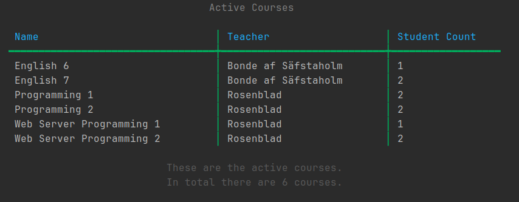
Bilden visar aktiva kurser.
För att utföra CRUD-operationer mot databasen, använde jag Entity
Framework. Detta efter att jag gjort en scaffold av databasen och
lagrat tabellerna som objekt i applikationen.
För att presentera hämtad data på ett snyggt sätt, mappar jag den
till en DTO för att förbereda objektet för utskrift.
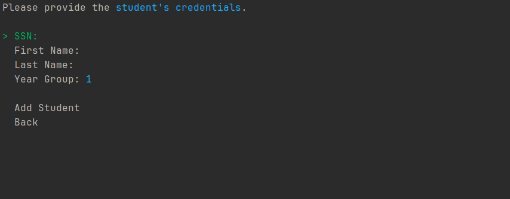
Bilden visar alternativ för att lägga till en ny elev.
Utöver att hämta data från databasen, går det att lägga till ny data
i form av nya elever och lärare. Det går även att betygsätta elever
när dem gått klart en kurs.
Banksystem
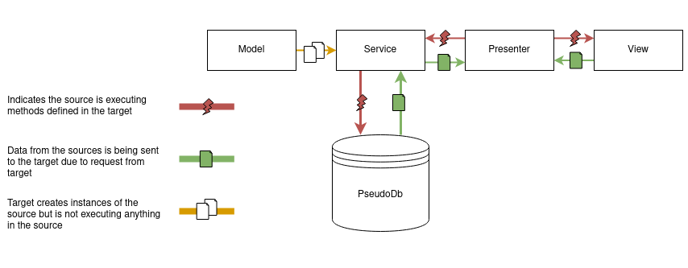
Bilden visar ett diagram för designmönstret MVP.
Som sista uppgift i kursen Objektorienterad programmering med C# och
.NET, skulle vi utföra ett grupprojekt över en kortare period.
Projektet gick ut på att utveckla ett banksystem där man skulle
kunna logga in på olika konton och göra överföringar till varrandra,
med mera.
Eftersom jag jobbat mycket med databaser tidigare, blev det väldigt
enkelt att förstå hur man skulle kunna strukturera projektet och
jobba utifrån en In-Memory-databas. Denna databas fick vara en klass
med generiska samlingar som egenskaper. För att hämta data från
denna databas kan man då härma hur CRUD-operationer med Entity
Framework går till, bara att man gör det mot en generisk samling som
till exempel en List.
Då jag hade höga ambitioner inför denna uppgift, var min förhoppning
att arbetet skulle bedrivas undan större hinder. Men sådan var inte
fallet. Min grupp hade bristande kommunkiation vilket ledde till ett
oavslutat arbete.
Detta berodde delvis på att vi inte hade påbörjat kursen
Projektledning med Agila metoder och förstått betydelsen av god
kommunikation i dessa sammanhang. Det berodde även på att ingen i
gruppen utfört ett grupprojekt inom programmering tidigare.
I vilket fall var grupparbetet en intressant upplevelse, och en god
läxa i att förstå kommunikationens betydelse inom grupper.
Personligen blev jag glatt överskad av att min tes kring
arkitekturen stämmde, även om jag önskat att vi avslutat arbetet med
all funktionalitet.
Webbplats åt en biograf
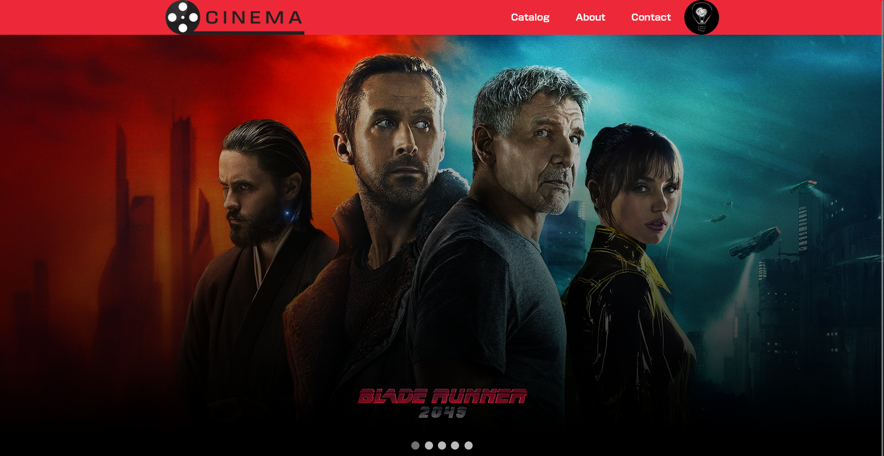
Bilden visar startsidan som består av ett bildspel.
När jag studerade på Vuxenutbildning Sundsvall, läste jag den
insiktsfulla kursen Webbserverprogrammering 2. Hela kursen gick ut
på att utveckla en hemsida åt en biograf där deras kunder kan skapa
konton och boka biljetter till diverse filmer. Administratörer kan
även använda ett Content Management System för att moderera innehåll
och användare.
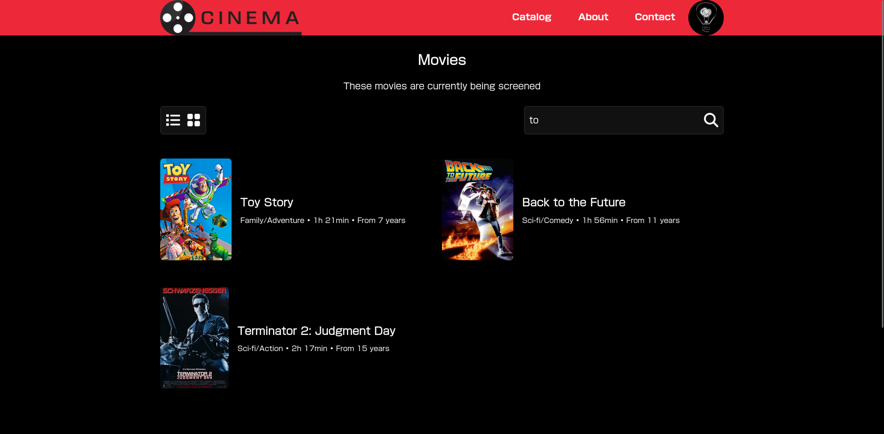
Bilden visar filmer utifån ett sökresultat.
Innan jag påbörjade denna kurs var jag väldigt intresserad av
Frontend-utveckling. Jag hade tidigare bara jobbat med statiska
sidor, och när jag lärde mig att använda en databas för att bygga
dynamiska hemsidor, tyckte jag att det var så pass roligt att jag
bestämde mig för att byta inriktning till fullstack.


 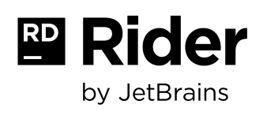
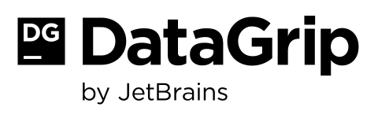
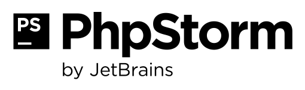
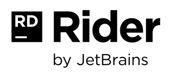
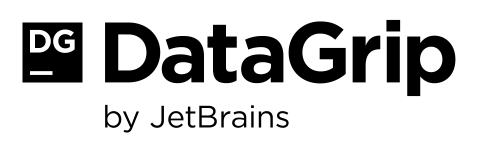
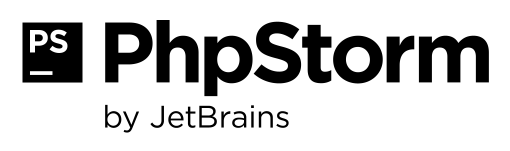